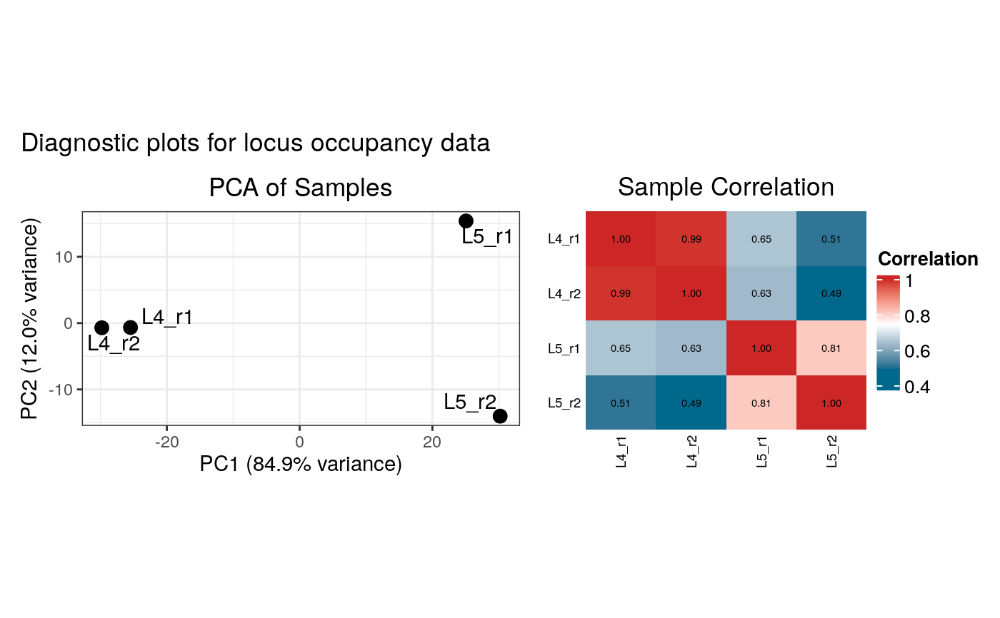
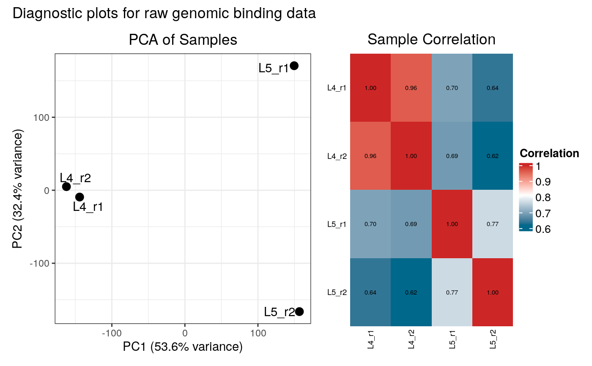

This function creates and displays diagnostic plots (PCA and correlation heatmap) for both occupancy and raw binding data. It is called by `load_data_peaks` and `load_data_genes`.
Arguments
- loaded_data
A list object, the output of `load_data_peaks` or `load_data_genes`.
- drop_samples
An optional character vector of sample names or patterns to remove for this diagnostic check. When used, the occupancy data is subsetted, not recalculated, providing an approximation of the effect of dropping samples. Default: `NULL`.
Examples
# Mock ensdb data to avoid network access
mock_genes_gr <- GenomicRanges::GRanges(
seqnames = S4Vectors::Rle("2L", 7),
ranges = IRanges::IRanges(
start = c(1000, 2000, 3000, 5000, 6000, 7000, 8000),
end = c(1500, 2500, 3500, 5500, 6500, 7500, 20000000)
),
gene_id = c("FBgn001", "FBgn002", "FBgn003", "FBgn004", "FBgn005", "FBgn006", "FBgn007"),
gene_name = c("geneA", "geneB", "geneC", "geneD", "geneE", "geneF", "LargeTestGene")
)
data_dir <- system.file("extdata", package = "damidBind")
# Load the example package data
loaded_data <- load_data_peaks(
binding_profiles_path = data_dir,
peaks_path = data_dir,
ensdb_genes = mock_genes_gr,
plot_diagnostics = FALSE # don't call the function here ...
)
#> Locating binding profile files
#> Building binding profile dataframe from input files ...
#> - Loaded: Bsh_Dam_L4_r1-ext300-vs-Dam.kde-norm
#> - Loaded: Bsh_Dam_L4_r2-ext300-vs-Dam.kde-norm
#> - Loaded: Bsh_Dam_L5_r1-ext300-vs-Dam.kde-norm
#> - Loaded: Bsh_Dam_L5_r2-ext300-vs-Dam.kde-norm
#> Locating peak files
#> Calculating occupancy over peaks
#> Calculating average occupancy for 1208 regions...
# Plot diagnostics
plot_input_diagnostics(loaded_data) # ... so that we can call it explicity :/
#> Generating diagnostic plots...

#> 3989 rows with zero variance were filtered.
